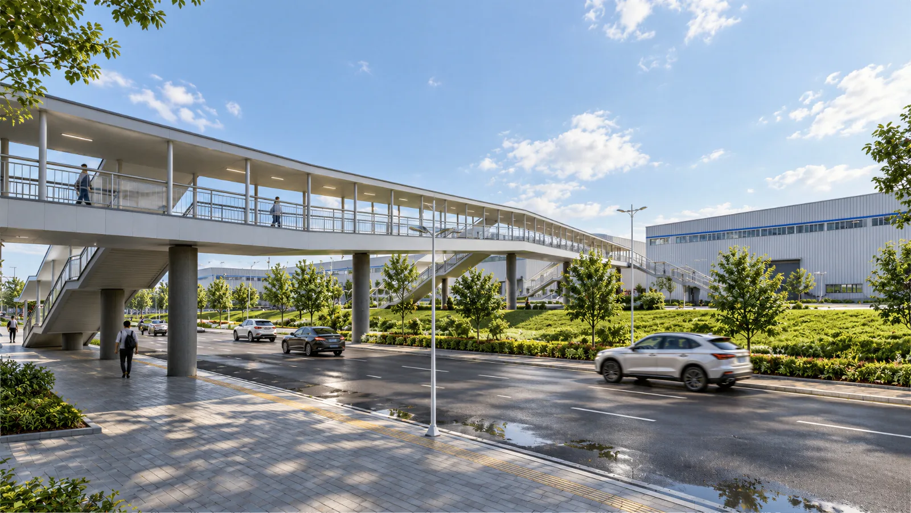
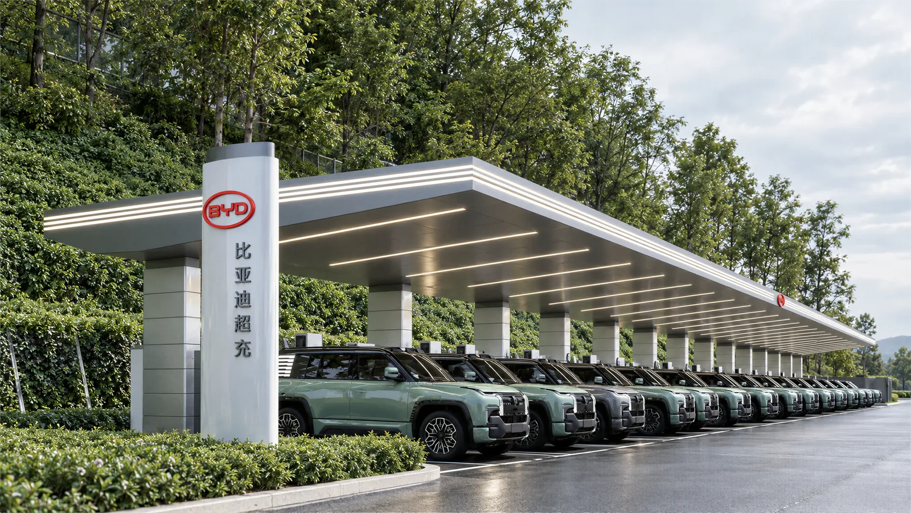
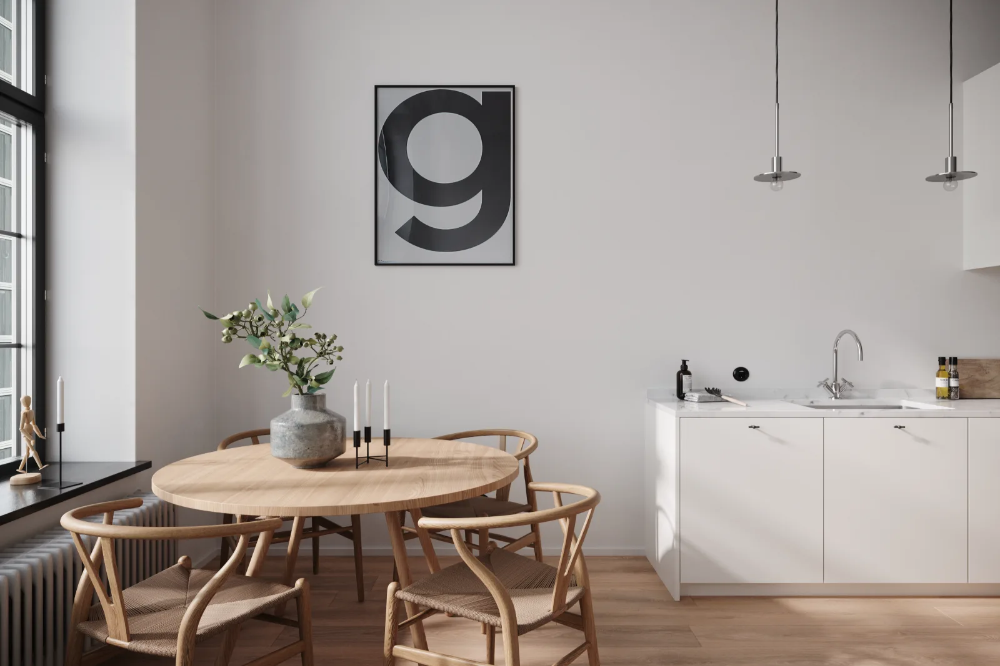

BYD-Guiyang Shiguangxu Affordable Housing Project
Visualizing the relationship between the residential buildings and their site for planning submission.
Auto CAD / 3Ds Max / Sketchup / Vray / Corona
Vaiorett / PORTFOLIO
Combining engineering precision with visual craft. Spanning 3D digitization, spatial & product rendering, CAD documentation, and AIGC workflows.

01 / Work
Explore the images, process and my contribution.
Team projects credit the original design team.
Visualizing the relationship between the residential buildings and their site for planning submission.
Auto CAD / 3Ds Max / Sketchup / Vray / Corona

Model production / Residential visualization
Architectural models and rendered views exploring the relationship between residential buildings, public spaces and the site.
SketchUp / 3ds Max / Photoshop
Architectural modeling / Visualization
Aerial and perspective views of the depot, showing building massing, façades and the relationship between architecture and its site.
AutoCAD / SketchUp / 3ds Max

Design modeling / Architectural visualization
Models and rendered views supporting the design of a racetrack grandstand and associated spaces, with a focus on façades, massing and spatial relationships.
SketchUp / 3ds Max / D5

Site modeling / Rendering
Bridge and site models based on the designer’s proposal, with rendered views from multiple angles to support design communication.
AutoCAD / SketchUp / 3ds Max

Provide visualizations for the parent company's new energy vehicle business
Sketchup / D5

An open-concept building that blends natural rock, water features, and modern architectural language explores the relationship between architecture and the natural environment through its sloping steel roof, exposed concrete colonnade, and transparent glass facades.
3Ds Max / Corona / Vray

Spatial modeling / Rendering
Interior design and visualization studies exploring spatial layout, materials and natural light.
SketchUp / 3ds Max / Photoshop

Materials / Lighting & rendering
Furniture visualizations focused on materials, lighting and atmosphere for e-commerce and product promotion.
3ds Max / V-Ray / Chaos Vantage

Modeling & material visualization
Explorations of 3D models, textures and lighting through changes in surfaces and materials.
3D Modeling / Materials / CGI

A cinematic visual experiment created in Unreal Engine 5.
UE5 / Bridge / Davinci

Asset production / Topology & materials
High-detail product assets connecting digital capture, model optimization and material creation for digital product delivery.
RealityCapture / Blender / UE5 / 3ds Max
02 / Capabilities
From CAD / TArch / BIM drawing development to architectural modeling and multi-angle visualization.
AutoCAD / TArch / SketchUp / Revit
View project ↗02Photogrammetry capture, industrial & product modeling, topology optimization, and structured asset management.
Blender / 3ds Max / UG / RealityCapture
View project ↗03Combining physically based renderers, ComfyUI / SD generative pipelines, and editorial layout for visual delivery.
V-Ray / D5 / ComfyUI / Photoshop / Linux
View project ↗03 / About
An experienced practitioner in digital visualization, 3D digitization engineering, and AI-assisted workflows.
My production background spans 3D digitization, product rendering, architectural CAD drafting, and interior design collaboration—covering drawing development, high-detail modeling, materials, lighting, and editorial layout (Photoshop / InDesign).
With studies in Business Administration and ISO 9001:2015 Internal Auditor certification, I also work comfortably in Linux (Fedora KDE / Ubuntu GNOME) and use ComfyUI, Stable Diffusion, and LLMs to streamline visual and documentation workflows.
Product digitization
Furniture product visualization
Architectural design collaboration
Interior design practice
Junior college diploma in progress · Open education
Advanced skilled-worker education
National Computer Rank Examination, Level 1 · Computer Fundamentals & MS Office
Interior Decoration Designer, Level 3
ISO 9001:2015 Internal Auditor Certificate
04 / Contact
We specialize in visual design, 3D/CAD engineering, AIGC content creation, project documentation management, and digital support roles. Please feel free to contact us via email.